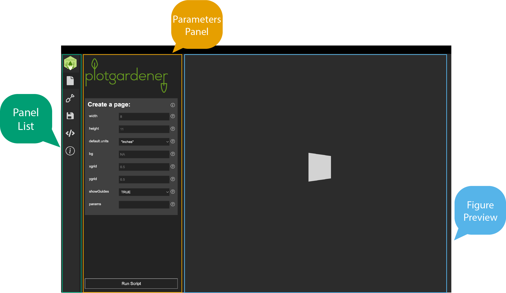
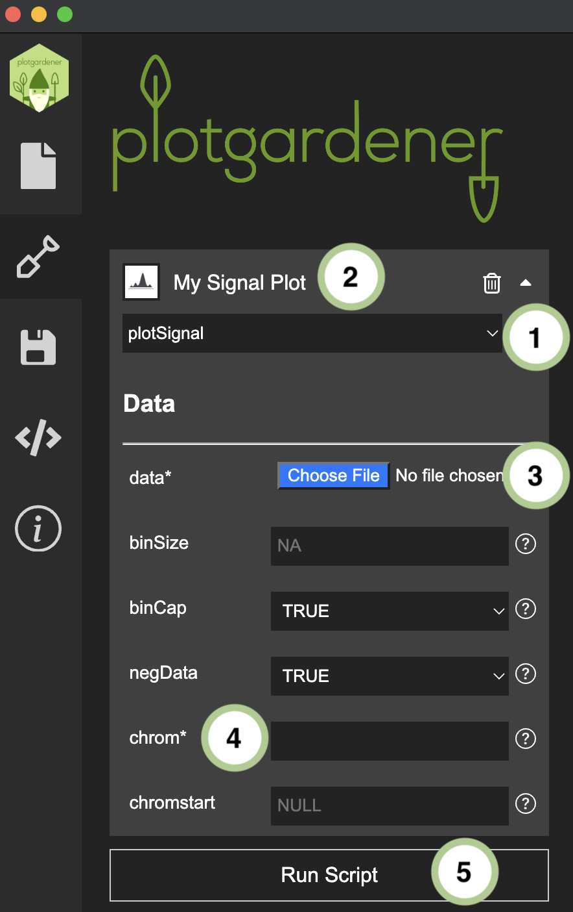
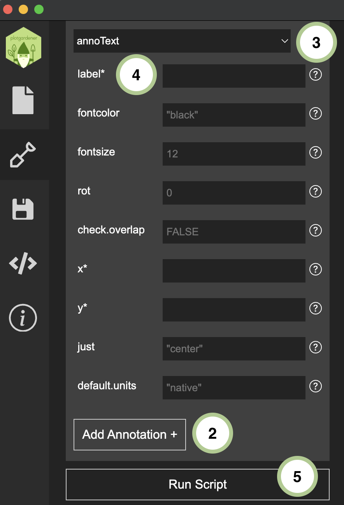

The Plotgardener App interface is divided into three regions: the Panel List, the Parameters Panel, and the Figure Preview. The Panel List on the left provides icon-based navigation between four sections — Page, Plots, Save, and Code. The Parameters Panel in the center displays the relevant controls for whichever section is active. The Figure Preview on the right shows a live rendering of your figure. This guide walks through each section and describes a typical workflow for building a figure from start to finish.

Before adding any plots, use the Page tab to set the overall canvas dimensions for your figure. Its settings appear in the Parameters Panel.
Settings available:
in),
centimeters (cm), or millimeters (mm).Once you have configured the page, click Run Script to render a blank page in the Figure Preview. Page dimensions directly determine the size of the exported PDF. If you are targeting a specific journal figure size (e.g., single-column = 3.5 in, double-column = 7 in), set those here.
For more on how the plotgardener coordinate system
works, see The plotgardener
Page.
The Plots tab is where you add, configure, and arrange individual visualization panels. Select it from the Panel List to load its controls into the Parameters Panel.

plotgardener function from the
Function dropdown in the Parameters
Panel. All functions supported by the installed version of
plotgardener are listed automatically.* in the
interface). Optional parameters can be left at their defaults.For more information on each type of plot and their input requirements, see Plot Types

To layer annotations onto an existing plot (e.g., a highlight box, genome axis, or domain boundary):
See Plot Types and Annotations for details on available annotation types.
The Save tab lets you preserve and restore your entire figure session. Select it from the Panel List to access its controls in the Parameters Panel.
.json file..json file to restore a figure exactly as it was, including
all panels and their parameter values.Sessions are portable across machines, making it straightforward to share figure templates with collaborators or reproduce figures in a different environment.
The Code tab displays the R script that the app generates from your current panel configuration. Select it from the Panel List to view the script in the Parameters Panel.
This tab is particularly useful for learning: configure a plot in the
Plots tab, then switch to Code to
inspect the equivalent plotgardener R function calls.
A complete figure-building session follows this sequence:
.json
file for later use or sharing.pgParams, assemblies, and color
utilitiesplotgardener
R package documentation